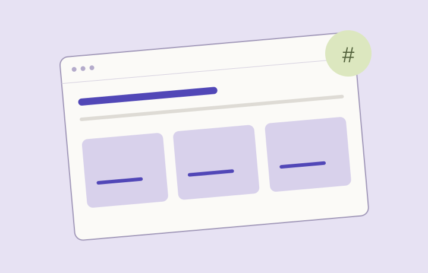
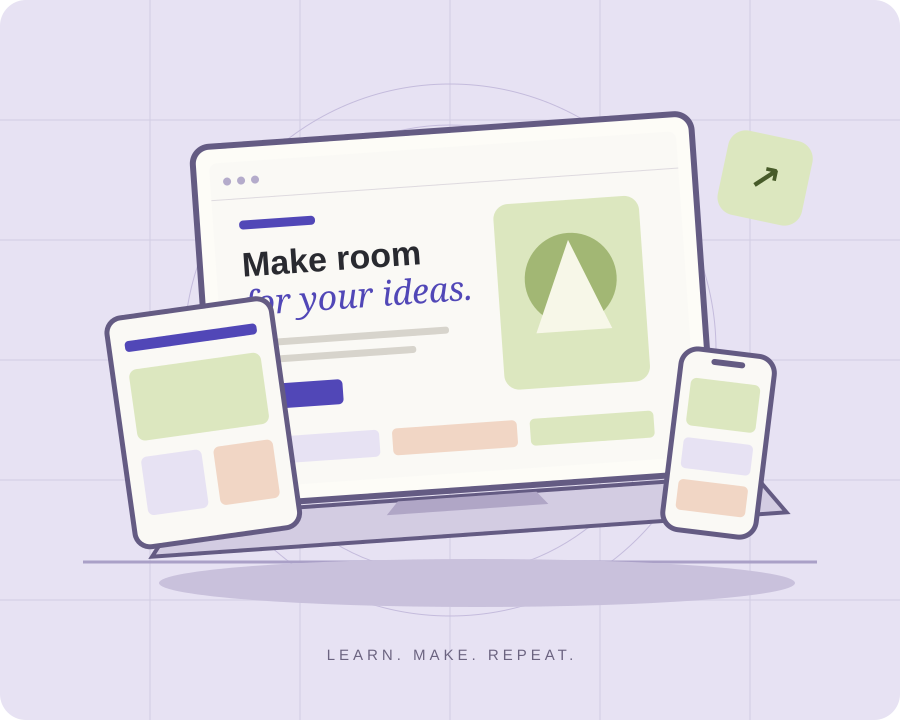
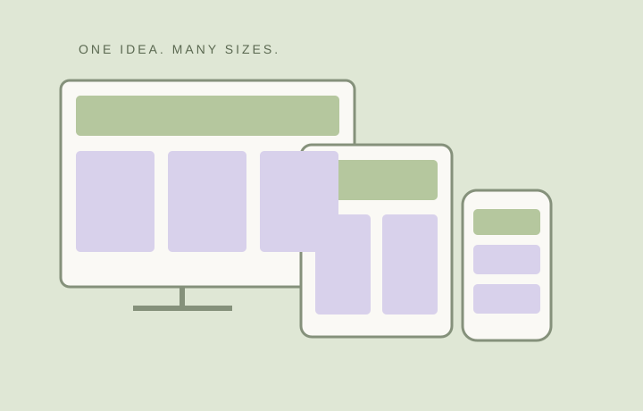

01 / LAYOUT
Give your content a flexible home.
Use a grid that changes its columns when the page needs more breathing room.
Read the layout noteA LITTLE LEARNING, EVERY DAY
Good ideas deserve a little room to grow. Explore practical notes on creating webpages that feel at home on every screen.
Find your next ideaA frontend learning journal by Yash.

THE LEARNING SHELF
Three foundations for a page
that grows with its content.

01 / LAYOUT
Use a grid that changes its columns when the page needs more breathing room.
Read the layout note02 / IMAGERY
Let images follow the width of their container while preserving their shape.
Read the image note
03 / RESPONSIVENESS
Choose breakpoints around the content, then check the spaces in between.
Read the screen noteMAKE IT A PRACTICE
One clear step at a time.
Arrange the content for a narrow screen first. Keep the reading order clear.
Use relative widths, scalable images, and a grid that can grow.
Introduce more columns only when the content has enough space.
Resize the page. Look for cramped text, stretched images, and overflow.
KEEP THIS CLOSE
Practical reminders for your next build. Expand a note to see how it works.
Start with one column. At 640 pixels, use two columns; at 1040 pixels, use three. These breakpoints keep each learning card wide enough to read.
minmax(0, 1fr) allows columns to share the available space without their contents forcing the grid wider than the screen.
Set images to width: 100% and height: auto. The illustration follows its container while retaining its original proportions.
Include width and height attributes in HTML to reserve space. Local SVG illustrations stay crisp when resized and work without an internet connection.
Check desktop, tablet, and phone widths, then resize around 640 and 1040 pixels. A page should stay usable before and after each layout change.
Look for horizontal scrolling, unreadable text, hidden navigation, or distorted images. Keep links visible and ensure keyboard focus is easy to see.